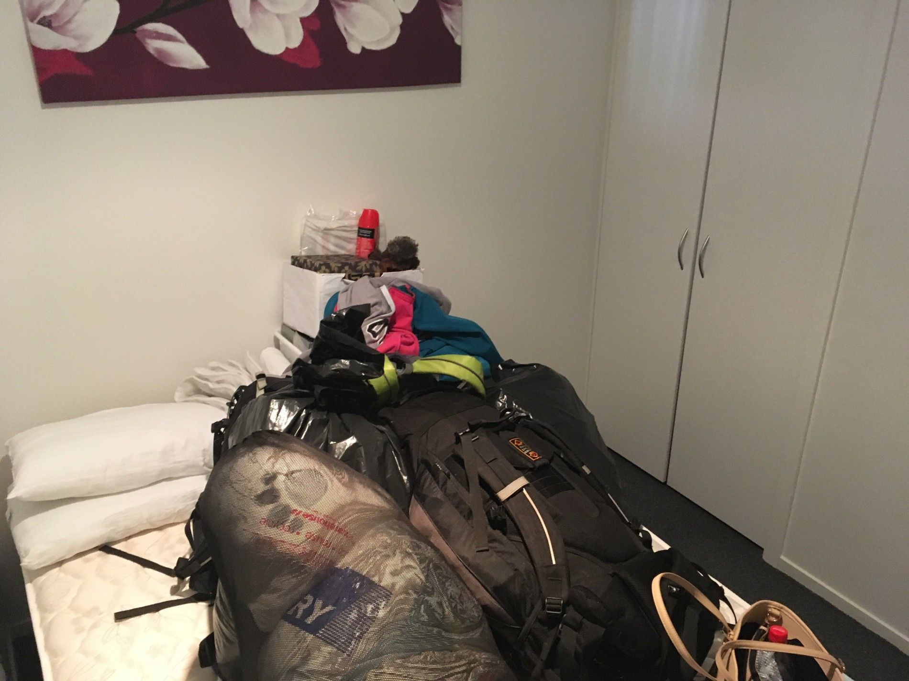
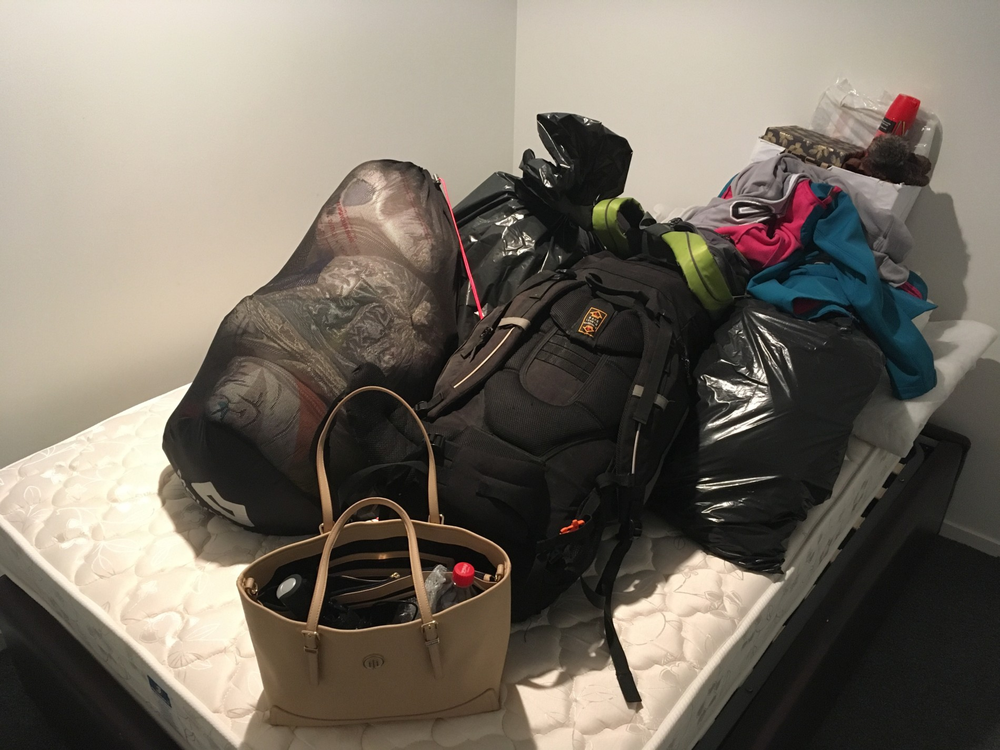
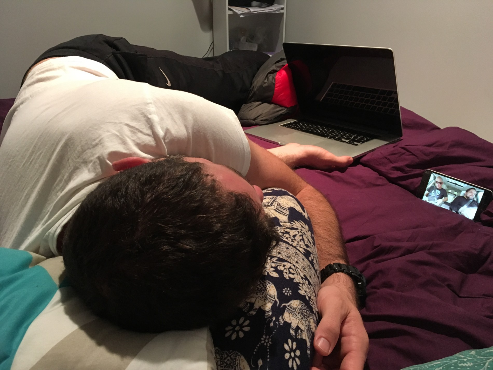
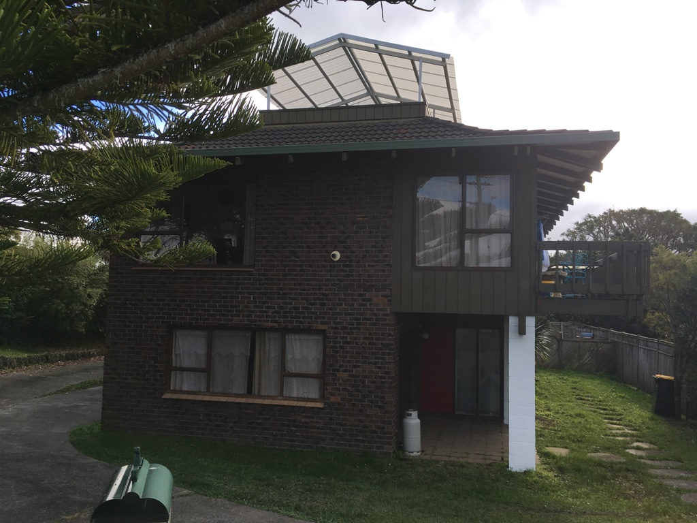
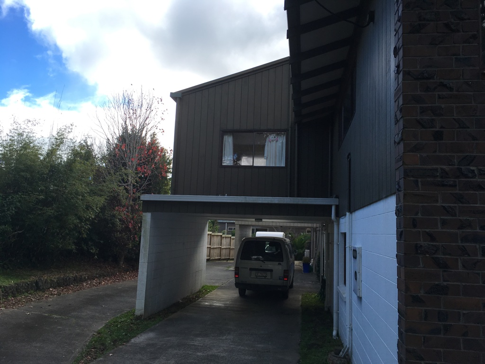
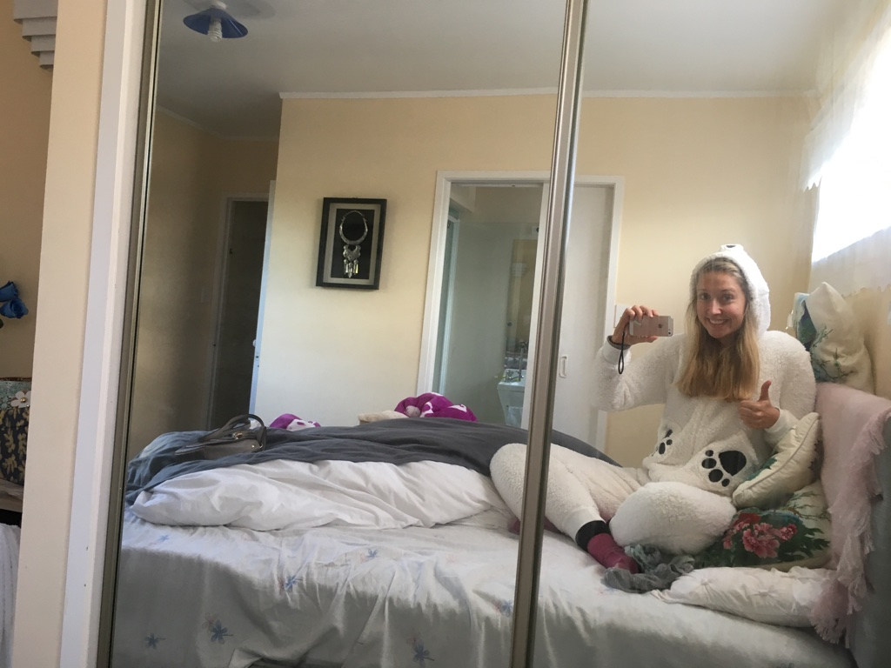

Tak je to už přes týden, co jsme se odstěhovali od Mexičanky. Díky bohu, že jsme odtamtud vypadli. Byla to už strašná ponorka. Teď bydlíme na severu Aucklandu v Browns Bay. Jsme tu teď přechodně na 14 dní ubytovaní přes Airbnb a v neděli se bude konat snad již finální stěhování do malého domečku, který budeme mít sami pro sebe. Ten byl totiž volný až od konce června, ale my už jsme chtěli vypadnout od Mexičanky a taky aby Mara nemusel dojíždět tak daleko do práce. S pokojem jsme si dost polepšili. Máme velký prostorný pokoj s vlastní koupelnou v třípatrovém domě, kde bydlí čínská paní domácí se svým synem. Oba jsou moc milí a vstřícní. Ovšem opět nelze opomenout ten šílený zvyk, který mají snad všichni Asiati společný – mlaskání. Takže společnému stolování tu rozhodně neholdujeme.
tady můžete vidět, jak byl ten náš pokojíček miniaturní a to je celý náš majetek 😀 je to správněj ajťák. Má puštěný video na mobilu, ve skutečnosti spí, ale jednou rukou si u toho drží svůj počítač 😀 tady teď bydlíme náš pokojík a pod ním Emil já ve svém novém medvědím oblečku, který mi pomáhá bojovat se zdejší vlezlou zimouJsem moc ráda, že jsme vypadli z centra. Tady je spousta zeleně a na pláž je to pár minut. V neděli po nastěhování jsme byli s Marou na obhlídce okolí a objevili jsme malinkatý ostrůvek, na který se dá při odlivu dojít. A pokud nejste připosraní (jako jsem byla já), dá se na něj i vyšplhat. Mara mi názorně předvedl, jak snadno se dá nahoru dostat. V půlce se mi rozklepaly kolena a řekla jsem, že dál nejdu. Musel za mnou slézt zpátky dolů a jistit mě zezadu 😀 I tak to považuji za neskutečný výkon a připadám si jako ostřílená amazonka.
Přes týden se toho moc neděje. Mara chodí do práce a já jsem poctivá hospodyňka. Práci se mi stále nepodařilo sehnat. Browns Bay je sice pěkný místo, ale s prací tu na mě bohužel nikdo nečeká. Já se ale nevzdávám a hledám dál. Někde mě prostě vzít musí 😀
Minulý víkend jsme vyrazili se Zuzkou a Ondrou na procházku u pláže Piha. Je to vyhlášený místo pro surfaře a bohužel se taky proslavilo tím, že v posledních pár letech tam zmizely dvě holky úplně beze stopy. Jojo, ani Zéland není stoprocentně bezpečný. Každopádně my jsme nikam nezmizeli a užili jsme si super výlet, který se díky všudypřítomnému bahnu stal napůl bojovkou. Celou cestu jsem si dávala pozor, abych se nevymáchala v bahně. Na konci cesty u potoka jsem si při mytí pohorek čupla. Samozřejmě jsem se zadkem opřela o patu pohorky, takže jsem si rozmazala bahno z boty přesně mezi půlky a na těch černých legínách to vypadalo, jak kdybych si solidně ukákla. Snažila jsem se to zoufale otřít vodou z potoka. Mara mi tvrdil, že to není vidět. Lhal.
Po ne zcela vydařeném týdnu, kdy na mě dopadl zlý časový posun, mírná poodletová deprese a uvědomění si zlé pravdy, že si musím začít opět hledat práci 😀 (což bylo dosti přikořeněno naším pekelnickým bydlením) se Mara rozhodl, že mi zvedne náladu a v pátek mě vyvedl na randíčko. Šli jsme do nedaleké restaurace na pečená žebra, která byla moc dobrá, ale shodli jsme se na tom, že v Česku je umíme připravit ještě o něco lépe. Následovala stand up show v místním klubu. Normální smrtelníci se chodí na stand up pobavit a odreagovat. To však nebyl náš případ. Nám oběma pracoval mozek na plné obrátky, neboť porozumět jejich neskutečné kiwi angličtině v podání komika, který mluví tak rychle, že se vlastně ani nenadechuje, je opravdu kumšt. Většina z vystupujících komiků byla opravdu zábavná. Minimálně těch 40% ze všech vtipů, kterým jsme dokázali porozumět 😀
Na víkend jsem nám naplánovala výlet na severní část ostrova. V pondělí tu byl svátek, takže jsme měli tři dny na výletničení. V sobotu ráno šel Mara vyzvednout Emila, který je zaparkovaný půl hodiny chůze od našeho bydlení. Emila teď dva měsíce nikdo nenastartoval, takže zlenivěl a vybila se mu baterka. Mara musel obejít okolní servisy, kde mu půjčili takovou velkou těžkou krabici, aby si mohl Emila nastartovat. Po pár neúspěšných pokusech si dal Emil říct a přece jen začal zase šlapat. Maru to stálo akorát deset dolarů a případnou kýlu.
Po poledni už jsme si to drandili nahoru na Sever. Byli jsme trochu v časovém skluzu, takže jsme vynechali zastávku u jezer a stavili se po cestě akorát na skvělý Fish and Chips v jednou malém městečku. Vedl to tam týpek, který dle mého názoru vylezl po dvaceti letech z vězení a rozhodl si splnit si svůj sen o malé hospůdce, kde bude lidem servírovat skvělý ryby. Prostě mu to sršelo z tváře, že už má v životě hodně za sebou. Taky ty špatně potetovaný ruce byly jednou z indícií, která mě vedla k této domněnce 😀
Večer jsme zakempili v Trounson Kauri Parku. Je to přírodní rezervace, kde můžete vidět stromy Kauri. Ty patří mezi největší na světě a bohužel je jich na Zélandu čím dál tím méně. My jsme však na toto místo zamířili z jiného důvodu. V noci tu lze totiž porozovat Kiwíky. V této oblasti se jim daří natolik, že pokud se půjdete v noci projít po stezce, je velká šance, že nějakého uvidíte. No…asi ne tak velká, protože my jsme viděli pěkný prd. Párkrát jsme je tam slyšeli zapískat, ale žádný se nám neukázal. A to jsme kvůli nim chodili od půlnoci do půl druhé po cestě a sledovali každý pohyb kapradí. Na druhou stranu jsme viděli úhoře, který žije v místních vodách a moc často se světu neukazuje. Ten náš byl očividně exhibicionista, protože se nás vůbec nebál a vytrvale nám pět minut pózoval na fotku. Ráno jsme tomu dali ještě šanci a znovu obešli celou stezku, jestli se nám nějaký opozdilec neukáže. Ale kdeže, nikde nic.
Pokračovali jsme dále na sever do Waipoua Forest, kde se nachází ty největší Kauri stromy. Možná si říkáte, pff, jezdit někam kvůli blbýmu stromu, taky mě to párkrát prolítlo hlavou. Když je pak ale vidíte, jak si tam majestátně stojí již dva tisíce let, tak vám to vezme dech. Možná i trochu donutí přemýšlet nad vlastní krátkodobou trvanlivostí. Jako správnej hipík jsem si jeden ze stromů objala. Ségra by na mě byla pyšná 😀
Kauri
hipík level 1000jakej jsem prcek vedle něj 🙂
Po obědě jsme si zajeli do Waiariki Springs. Takové rurální, ne zrovna libě vyhlížející lázně, kde se můžete naložit do bazénků s horkými prameny. Některé byly natolik horké, že jsem nebyla schopna tam strčit ani nohu. Jediný pán, který tu teplotu vydržel, vypadal po dvou minutách jak vařené kuře. Tady jsme si udělali relaxační dvouhodinovku. Smrad sirovodíku se nás však drží doteď 😀 Taky mě velmi potěšilo, když vedle nás seděla skupinka Američanů a paní se ptala, jestli někdo z nich ví, který bazén má jakou teplotu. Jeden z mužů jí na to odpověděl, že absolutně netuší, protože paní na recepci (která to každému po příchodu vysvětluje) nerozuměl ani slovo 😀 Prostě ani lidé, jejichž rodným jazykem je angličtina, tu místním nerozumí.
Waiariki Hot Pools – Sami jsme se nevyfotili, tak aspon pro predstavu tady je fotka ukradena z https://goo.gl/maps/59J19oGuMtt
Další zastávkou byly Rainbow falls. Nečekaně veliké vodopády se schovanou jeskyní. Do jeskyně je možný přístup po obvodu z pravé strany, ale je to po mokrých kluzkých kamenech, a jelikož je to pod srčící vodou, člověk se tam suchou nohou nedostane. Toto dobrodružství jsme si odpustili a kochali se romantickým pohledem na padající vodu.
V podvečer jsme přejeli na východní stranu ostrova do města Paihia. Nachází se ve známé zátoce Bay of Islands a z malého zapadlého městečka se časem stala oblíbená turistická destinace. Zátoka je to tuze pěkná, ale samotné městečko nás ničím nezaujalo. Rozhodně nás nezaujaly BBQ kuřecí křídla v místní restauraci 😀 Poprvé jsem dala hospodě špatný hodnocení na Foursquare. Až tak špatný to tam bylo.
Zjistili jsme, že v okolí jsou na přespání dva freedom kempy, ale jeden z nich je dočasně zavřený (dočasně už pár let) a druhý je vysoce nedoporučovaný z důvodu vysoké kriminality místních Maorských výrostků, kteří tam chodí turistům vyhrožovat se šroubovákem a okrádají je o telefony. Chtěli jsme si po cestě najít nějakou schovanou polňačku. Úplně jsme zapomněli, že každá schovaná polňačka je na Zélandu něčí příjezdovka. Když jsme dojeli přímo k něčímu domu, byli jsme příliš unavení na to, abychom jeli dál. Zeptala jsem se paní domácí, jestli jim tam nemůžeme přespat na cestě, že je nebudeme otravovat a čůrat budeme chodit daleko do trávy 😀 Paní neměla problém a nabídla nám, že můžeme klidně chodit čůrat do domu. To jsem s poděkováním odmítla 😀
V noci mě probudily šílený rány. Vzbudila jsem Maru s tím, že tam určitě někdo střílí a co budeme dělat. Mara pár vteřin bedlivě naslouchal, pak mi oznámil, že je to ohňostroj a ať jdu zase spát 😀
V pondělí ráno jsme vyrazili do Whangaruru na procházku po peninsule, kde na nás čekal 360° výhled na okolní ostrovy, pláže a zátoky. Konečně jsme trochu protáhli nohy. Když jsem vyšlapávala ten 57765445 miliontý schod, říkala jsem si, že to dělám pro sebe, pro zdraví a můj zadek to potřebuje. Jinak bych totiž klasicky celou cestu nadávala 😀
Ano, myslíte si to správně…čůrám 😀vyhlídka
Skoro jsem zapomněla, jak je ta příroda tady krásná. Ty pohádkový krajiny, kýčovitý údolí a všude se pasoucí ovce nebo krávy. Prostě nádhera.
Na zpáteční cestě jsme zastavili ještě u jedněch vodopádů. Whangarei falls. Jsou velmi podobné těm prvním, ale kolem těchto si můžete udělat půlhodinovou procházku a vidět je ze všech různých úhlů pohledu. Padající masa vody prostě nikdy neomrzí.
Poslední zastávka byla jeskyně Waipu. Po vstupu do jeskyně jsme zjistili, že máme dvě možnosti. Buď se budeme brodit vodou nebo vylezeme na vysoký balvan a od tam přejdeme opatrně dále do jeskyně po vyvýšené stěně. Podepřela jsem Marovi nohu, aby se vysoukal nahoru a šel se podívat, zda můžeme pokračovat suchou nohou. Řekl mi, že ano a já se zuby nehty vysápala nahoru. Cesta pokračovala asi dalších deset metrů a následovalo brodění. Mara mi pobaveně oznámil, že sice věděl, že to pokračuje do vody, ale chtěl vědět, jestli to vylezu. Je to zlatíčko ten kluk. Po dalším pěti minutovém brodění studenou vodou jsme došli do místa, kde visely tisíce svítících červů a strop jeskyně vypadal jako hvězdná obloha. Stáli jsme tam ve studeném blátě opravdu dlouho a nemohli se vynadívat. Úžasný.
Venku jsme se jali objevovat vedlejší malou jeskyni a skákali jsme přitom přes potok. Řekla jsem Marovi, ať mě chytá, že to tam může klouzat a já se nechci rozbít. Ve chvíli, kdy jsem vyskočila……se otočil na druhou stranu 😀 Potřeboval si totiž odložit stojan na foťák a jaksi přehlídl, že skáču. Začala jsem se smát už ve výskoku, když jsem viděla jeho reakci ala otáčím se a odcházím, ale naštěstí jsem doskočila v pohodě a na princeznu.
Večer jsme dojeli na byt unavení, špinaví, smradlaví, ale šťastní a spokojení, že se nám výlet takhle vydařil.
Tak i já přispěji svoji trochou do mlýna, abych vám řekla, co se za poslední měsíc událo.
Před měsícem jsem odlětěla zpět do ČR, abych překvapila svoji nejlepší kamarádku na její svatbě. Cesta se dala zvládnout, protože jsem měla přespání v Soulu, kde mi aerolinky zařídili pětihvězdičkový hotel. Musím přiznat, že už to v žádným hotelu pro mě nebude nikdy jako dřív 😀 Ručníky na obličej jsem samozřejmě nepoužila.
pohled z hotelového oknaostrůvky kolem Soulupřistáváme
Můj přílet byl překvapením úplně pro všechny včetně rodičů, takže byla velká zábava sledovat ty nechápavé pohledy, kde se tam beru. Svatba se moc povedla a byla to velká zábava. Po půl roce jsem čuchla ke špuntu, takže mi nedělalo problém zpívání do mikrofonu a matně si pamatuju ten výraz na tváři střízlivé nevěsty s jejím tátou (oba s vytříbeným hudebním sluchem) při sledování mých pěveckých výkonů. No výraz obdivu to rozhodně nebyl.
chytáme kyticinaprosto boží fotka s ženichem
Tři týdny utekly neskutečně rychle. Nakoupila jsem si nějaké oblečení, abych tu nechodila jak úplnej vandrák. Jelikož už nebydlíme v autě, můžu si zase začít hrát na dámu, co nosí pěknou kabelečku, růžový kabátek a rozhodně nikdy nečůrala do zavařovačky.
Taky jsem oslavila třicátiny. Den před narozeninami, kdy jsem seděla s našima u vína a hrála kanastu mi táta oznámil, že je to poslední den mých dvacátých let a jak se cítím. No… trávím tento den s rodiči hraním karetních her. Cítím se velmi dospěle 😀
Na moje narozeniny mi Mara vymyslel bojovku, kde jsem se pomocí hádanek a tajenek musela dopracovat ke svému dárku. Bylo to pěkně vymyšlený a na konci mě čekala krásná kytice slunečnic a nový počítač. Měla jsem velikou radost. Osvětlil to tak, že sice věděl, že si na něj stežuju, ale jelikož si stežuju pořád a na všechno, tak to nebral moc vážně. Jeden víkend se mu však zablokoval jeho počítač a on byl nucen používat ten můj starý. V tu chvíli pochopil, jak to s ním opravdu je 😀 Já jsem za svůj starý počítač zpětně docela vděčná. Naučil mě trpělivosti…nebo se o to alespoň poslední rok usilovně snažil.
Holky mi udělaly taky super překvápko a vzaly mě na jižní Moravu do Cafe Fara, což je taková vyhlášená restaurace. Po cestě tam se však v autě lilo šáníčko proudem, takže jsem po příjezdu nevypadala zcela reprezentativně, ale tak co, je mi třicet jenom jednou, že 🙂
Týden před příletem se mi narodil synovec. Je to krásný roztomilý malinký miminko. Víte jak se říká, že všechny miminka mají charakteristickou vůni a že tak voní jen chvilku? Já to necítím. Očuchávala jsem ho dlouho a často…a nic. Cítím to jen u štěňat 😀
je to rebel 😀sladkej,že?S mámou a ségrouna bobové dráze
Naši byli z mého příjezdu nadšení a máma se o mě starala jak o princeznu. Teď jsem vržena zpět do reality, kdy se mi přestalo jídlo záhadně samo objevovat v ledničce a uvařené na stole. Mara tímhle problémem očividně netrpěl, protože při procházce v okolí mi ukázal velké množství různých restaurací, kde už na jídle byl a kde ještě nebyl, ale plánuje tam jít. Když jsem mu po příletu psala, co je v ledničce naše a co je spolubydlících, napsal, že naše je horčice a chleba.
Zpáteční let byl o něco náročnější než ten první, protože jsem letěla v kuse bez přespání, kdy jsem v Soulu měla jen čtyřhodinový přestup. Nějak jsem to ale zvládla a ve čtvrtek v sedm ráno na mě na letišti čekal zívající Mara. Bylo to radostné setkání a musím uznat, že poslední týden už se mi fakt hodně stýskalo.
jeden z našich videohovorů, kdy mě bavil Marův stín ala Elvismlha nad ranním Aucklandem
Co mi teď opravdu leze na nervy je časový posun. Už čtvrtý den nemůžu spát. Právě teď sedím na záchodě na dece a jím banán. Jsou čtyři ráno. V tomhle pidi bytě není kam jinam jít, abych přitom nerušila Maru nebo naše prašivý spolubydlící. O těch jsem vlastně nic nenapsala, že? To možná proto, abych nemusela mluvit sprostě. Je to mexický pár a já je nemůžu vystát. Jsou absolutně netolerantní a neberou na nás žádný ohledy. Třeba v tomhle bytě o velikosti garáže uspořádají večírek, aniž by se nás zeptali, jestli je to v pořádku (což bylo v době, kdy jsem pracovala v horor hotelu a další den vstávala do práce). Když vstanou, tak si pustí hudbu na plný pecky a neřeší, jestli spíme. Za 12 dní se budeme stěhovat a já už netrpělivě stříhám metr, kdy z téhle díry zmizíme.
Tak to jsou novinky z posledního měsíce. Jo a v Česku jsem přibrala asi dvě a půl kila a moje kotníky se staly opět neviditelnými objekty.
Byla dlouhá pomlka, já vím a omlouvám se. Za to mám pro vás žhavé novinky ze světa pokojských. Opět musím upozornit, že pokud si chcete ponechat alespoň zbytek vzpomínek na princeznovskou Lenu, tenhle příspěvek přeskočte.
Poslední dva týdny jsem dřela jak mezek. Projevuje se to tak, že i když denně pozřu asi tak půl kila čokolády, tak ztrácím na váze…ano, takovej já mám teď výdej 😀
S blechama to taky pokročilo. Ve chvíli, kdy jsem byla pokousaná hodně velkým stylem na krku jsem to chtěla zabalit na místě a prostě už do té práce nejít. Jsem ale bojovník, takže jsem si všechny svoje věci v šatně zabalila do igelitek a v práci jsem si každý den myla hlavu, abych si náhodou nějakou tu malou ludru nedonesla domů. Tenhle týden jsem však došla k velkému zjištění. Blechy jsou i na pokojích pro hosty. V pětihvězdičkovým hotelu uprostřed Aucklandu můžete chytit blechy 😀 A za stížnost, že jste byli pokousáni dostanete celých 37 dolarů slevu 😀 Je to absolutně neuvěřitelný, ale je to tak.
Další zjištění je, že pokud vás budou blechy kousat dostatečně dlouho, tělo si proti tomu dokáže vytvořit imunitu. Štípance se hojí mnohem rychleji a nakonec o nich skoro nevíte. Proto asi bezďákům u nás (v ČR) ty blechy nevadí, už s nimi žijí v harmonii 😀 Další věc je, že od mého poštípání na krku mě nic dalšího nekouslo. Možná mají blechy nějakou hierarchii jako slepice, takže pokud mě teď šťípla nějaká alfa blecha, už jsem ocejchovaná a žádná obyč blecha už si na mě nedovolí. To je moje teorie 😀
Včera jsem zašla za jedním ze šéfíků, abych mu osvětlila, co všechno jim tam nefunguje. Sama jsem se pobavovala nad tím, že jdu do kanceláří mezi všechny ty kravaťáky pěkně ve své uklízecí uniformě a s hadrou nacpanou z boku za tou mojí bílou zástěrou. Šéfík je sympaťák a mimo jiné jsem se dozvěděla, že je z Jihoafrické Republiky, celá jeho rodina žije v Rakousku a má rád Český Krumlov 😀
Jo a ještě k něčemu se musím přiznat, stal se ze mě hroznej dojížděč zákusků. Každej druhej host něco slaví, takže většinou nacházím v pokojích talíře se zákusky s nápisem šťastné narozeniny, šťastné výročí, šťastné líbanky a když tam zbyde i nějakej ten zákusek, tak jsem šťastná i já. Ze začátku jsem se trochu ostýchala a přišlo mi to trochu ekl, ale většinou je to tak pět malých zákusků a jeden až dva zůstávají netknutý. A to je ta chvíle, kdy přijdu já a všechno si to narvu do hlavy 😀 Dva dny zpět jsem měla nejlepší meruňkovou makronku, co jsem kdy jedla. Pán, co slavil narozeniny udělal podle mě velkou chybu, že ji nesnědl 😀
A nesmím zapomenout na speciální odstavec pro Kubu. Už jsem přišla na to, proč má každý host k dispozici papuče. Není to proto, aby mu bylo fajn teplo na nožky, ale proto, že se v koupelně nikdy nevytírají podlahy. Není to tím, že by uklízečky byly líný a nevytíraly je. Nemají to vůbec v popisu práce 😀 nemají na to žádný vybavení, nic. Koupelny se jen vysávají, ale nevytírají. Takže až příště půjdete na hotelu bosky čůrat a budou se vám lepit nožky k podlaze, s největší pravděpodobností je to špatně mířený proud nějakého Číňana, co tam bydlel před váma 😀
Tenhle týden se děly velký věci. Vééélkýý věci. Chvíli jsem zvažovala, zda to sem opravdu napsat, jelikož je to dosti potupné, takže kdo si mě chce pamatovat tak, jak mě zná z dřívějška, tedy jako roztomilou princeznu, tak prosím nečtěte dále 😀
Začalo ti divným štípancem na ruce. Komár, říkám si. Jenže pak se objevilo štípanců víc a víc….a byly v řadě. To mojí milí, může znamenat pouze dvě věci. Štěnice nebo blechy. Štěnice byly ihned vyloučeny, jelikož štěnice mě kousla loni na Hip Hop kempu ve stanu, takže s touhle havětí již mám zkušenost. Nene, byla to blecha. Vygradovalo to ve chvíli, kdy jsem se škrábala jako blázen po nohách ve svých sloníkových kalhotech a vyplašeně křičela na Maru, že mám v kalhotách určitě blechu a co mám dělat. Stáhla jsem je rychlostí světla a zavřela do igeliťáku do karantény. Co to má jako znamenat? Blecha? Odkud? Z práce, z bytu nebo z autobusu? No totální dno. Připadala jsem si jako největší póvl. Na Maru takhle havěť nejde, jelikož má podle mě nějaký speciální venkovský geny, který tuhle havěť prostě nepřitahujou. Dva dny se mi tak trochu vysmíval a večer mi dával pusu na dobrou noc se slovy: „Tak dobrou noc….a ať tě blechy štípou celou noc.“
Když jsem ve čtvrtek došla do práce, vyzbrojená obřím červeným sprejem proti hmyzu, který vypadá jako hasičák, čekalo mě další překvapení. Po cestě na záchod v dámských převlíkárnách leze po zemi šváb. Podívám se nevěřícně na švába (který mě měl dost na háku a pochodoval si v klidu dál), pak na Lenku (moji kolegyni), na švába a na Lenku a ptám se: „Ehm, já jen, tohle je šváb, ne? To tady normálně takhle bydlí?“ Lenka mi s naprostým klidem oznámila, že ti tam bydlí ve velkým a jestli mě pohoršuje tenhle jeden statečnej, tak ať radši neotvírám přilehlou komoru, protože tam mě čeká švábí invaze. Nevěřícně jsem na ni koukala, jestli to myslí vážně. Podívala se na mě takovým lítostným pohledem a říká:“ No to ti ani nebudu říkat, co dál tady můžeš objevit za zvířata.“ To já už ale dávno věděla, jaký zvířata můžu objevit, jen jsem nevěděla jistě, odkud se objevují. Tak jsem jí oznámila, že vím, že myslí blechy, že mám na sobě sto pět štípanců a v kabelce malý protibleší hasičák. V tu chvíli mi osvětlila celou situaci. Mají tam problémy s blechama už měsíce, nikdo s tím nic nedělá a holkám, co tam očividně připluly na loďce někde ze Samoy z pralesa, to nevadí. Ona, ještě s jednou českou kolegyní, si stěžovali už několikrát, ale řekli jim akorát to, ať si převlečou uniformu a podívají se, jestli to netahají náhodou ony z domu. No vřela mi krev v žilách, to si asi dokážete představit. Běžela jsem za personální a zeptala se jí, jestli opravdu věděla o problému s blechama a nijak mě na to neupozornila. Řekla mi, že přece nemůže jednotlivý zaměstnance upozorňovat po jednom. Zeptala jsem se, jestli to myslí vážně. Po jednom nás poučovala o tom, jak máme chodit po schodech a držet se zábradlí, ale zrovna tohle jí nepřišlo důležitý? Vysvětlila jsem jí, že to takhle teda nenechám. Pak jsem běžela za svojí nadřízenou a řekla jí to samé. Ta na mě začala zkoušet, jestli je nepřináším z domu, tak jsem jí řekla, ať tohle na mě vůbec nezkouší, že už to zkoušela na dvě kolegyně přede mnou, a že to by musela být opravdu velká náhoda, abychom to všechny tahaly z domu do práce. No v minutě jsem se stala nejproblémovějším zaměstnancem v hotelu a nikdo už mě nemá rád 😀 Každopádně se věci daly do pohybu, protože za půl hodiny už páni manažeři kontrolovali dámský šatny, tak jsem se octla i tam a osvětlila situaci, aby se s tím začalo rychle něco dít. Teď přemýšlím, zda to hnát někam dál….třeba je zažalovat nebo vydírat nebo to dát do zpráv 😀
Tak jen abyste věděli, jak to chodí v těch pětihvězdičkových hotelech 🙂 a teď další dobrá rada pro všechny (speciálně pro Kubu Halvu). Na každým pokoji bývají skleničky a hrnečky. Než je použijete, radši si je trochu umyjte. Každá pokojská totiž vezme použitou skleničku, opláchne ji v koupelně jen vodou a rukama, a pak ji utře použitou hadrou na prach 😀 To já ale nedělám, nejsem prase. Já vezmu čistý ručník a utřu skleničky do něj. Takový ten malý ručník, víte…jak se používá na obličej 😀
Jinak se mi osud teď vysmívá stejně jako Mara, takže když jsem si pustila seriál, návez onoho dílu byl Akrobat a blecha. Když jsem si pustila můj denní výber hudby na Spotify, první píseň byla Catch my disease (chyť moji nemoc). Zábava, že?
Teď mám dva dny volno, takže si půjdu za odměnu koupit něco na sebe a budu zase šťastná jako blecha 😀
Tady už je švábík na zádech, protože byl poskříkán hasičákem


{kind=link}
{kind=link}
{kind=link}
{kind=link}
{kind=link}
{kind=link}
{kind=link}
{kind=link}
{kind=link}
{kind=link}
{kind=link}
{kind=link}
{kind=link}
{kind=link}
{kind=link}
{kind=link}
{kind=link}
{kind=link}